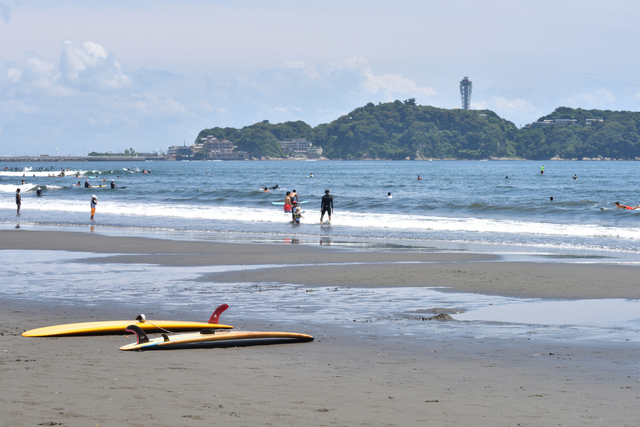

片瀬西浜（江ノ島）
江ノ島大橋の西側に広がる相模湾の遠浅サーフです。砂底主体で根がかりが少なく、足もとの水深は3m前後とかなり浅め。シロギスを狙う常連の多くは夏の海水浴シーズンを避け、サーファーが引いた日没後か早朝に竿を出します。境川河口寄りのエリアは砂の堆積による地形変化があり、キスが溜まりやすいポイントとして知られています。秋の落ちギスの時期は岸寄りの浅場でも反応が出ることがあり、ヒイラギやメゴチも多く混じります。
ここだけの話夜明け前に現地入りして、水族館の前や地引網の前で思う存分釣りをしてください。その後はだんだんマリンスポーツの方が増えてきます。そうしたら東の片瀬漁港の付近で釣りを続けます。ここもしばらくするとSUPのエントリーポイントになるので、その頃には納竿です。▼江ノ電駐車センターが最寄りの駐車場です。朝４時から入庫できます。最大料金がないです。ご注意を。▼近所の船宿さんで虫エサが買えます。
MOVED 旧: FAQ・基本情報の後 → 新: リード文の直後
実装時: Chart.js による24時間グラフに置き換わります
MOVED 天気の直後に固定
5月5日の葵ちゃんコメント
波は0.6〜0.8mで落ち着いてますね。南西の風が昼から3〜4m/s程度に上がりますが、サーフ系なら午前中が動きやすいと思います。片瀬西浜は遠浅で波の影響が出やすいので、風が上がる前の早朝がおすすめです。キス狙いなら境川寄りのエリアで地形変化を探してみてください。
※AIによる個人的な感想です。気象情報ではありません。
NEW C-1 魚種バッジ → 各魚種ページへの動線
このスポットで狙える魚
各魚種の釣れる時期・おすすめタックルなど詳細を見る
周辺施設
マーカーの場所は上の地図でご確認ください（500m以内）。
基本情報
| 釣り場タイプ | サンドビーチ |
|---|---|
| 底質 | 砂主体、貝殻混じり、近傍に石要素あり |
| 海底傾斜 | 中程度の遠浅 |
| アクセス | 片瀬江ノ島駅から徒歩10分 |
| 対象魚種 | |
| 情報更新日 | 2026年04月18日 |
一週間の潮汐
一週間の海況・気象情報
| 日付 | 天気 | 気温 | 潮 | 風速・風向 | 波高 | 波周期 | 海水温 | 降水量 |
|---|---|---|---|---|---|---|---|---|
| 5/5(月) | 晴れ | 18.3℃ | 中（大潮） | 2.4m/s 西南西 | 1.3m | 7s | 16.4℃ | 0.0mm |
| 5/6(火) | 晴れ | 17.7℃ | 小（大潮） | 1.9m/s 南南西 | 1.0m | 6s | 16.6℃ | 0.0mm |
| 5/7(水) | くもり | 16.5℃ | 小（中潮） | 3.2m/s 西南西 | 1.2m | 7s | 16.4℃ | 0.0mm |
| 5/8(木) | 晴れ | 17.2℃ | 大（小潮） | 2.8m/s 南西 | 0.5m | 8s | 16.4℃ | 0.0mm |
| 5/9(金) | くもり | 16.3℃ | 中（小潮） | 2.5m/s 南西 | 0.8m | 8s | 16.4℃ | 0.0mm |
| 5/10(土) | 雨のちくもり | 15.5℃ | 中（長潮） | 2.5m/s 南西 | 0.5m | 8s | 16.4℃ | 0.0mm |
このスポットで使うタックル
NEW B-4 関連コラム → サムネイル付きカード化（旧: テキストリスト）
この釣り場に関連するコラム


MOVED コンテンツ群の後に移動
近くのサンドビーチスポット
MOVED SEO/GEO用途 → 最下部に移動
よくある質問
- 駐車場はありますか？
- 江ノ電駐車センターが最寄りで朝4時から入庫できます。最大料金の設定がないのでご注意ください。
- トイレはありますか？
- 海岸沿いに公衆トイレが複数あります。場所は上の地図でご確認ください。
- 近くにコンビニはありますか？
- 500m以内にコンビニがあります。場所は地図でご確認ください。
- どんな仕掛けが有効ですか？
- シロギスには投げ釣りが基本です。ヒラメ・マゴチにはジグヘッド＋ワームや泳がせが有効です。
- 釣り場の近くで釣具は買えますか？
- 近所の船宿さんで虫エサが購入できます。